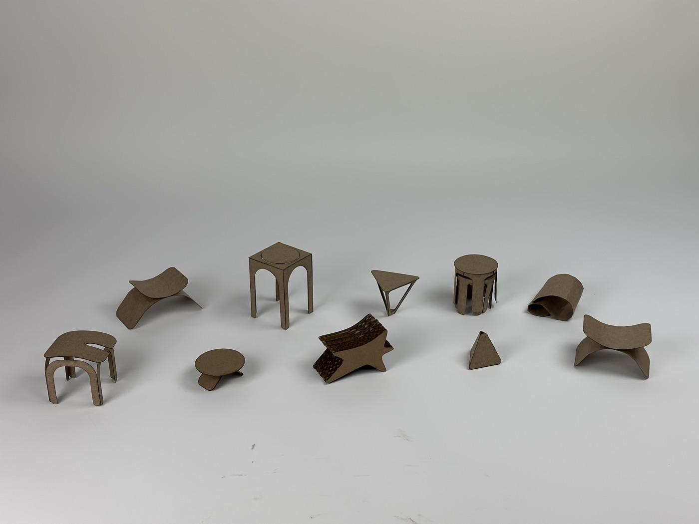
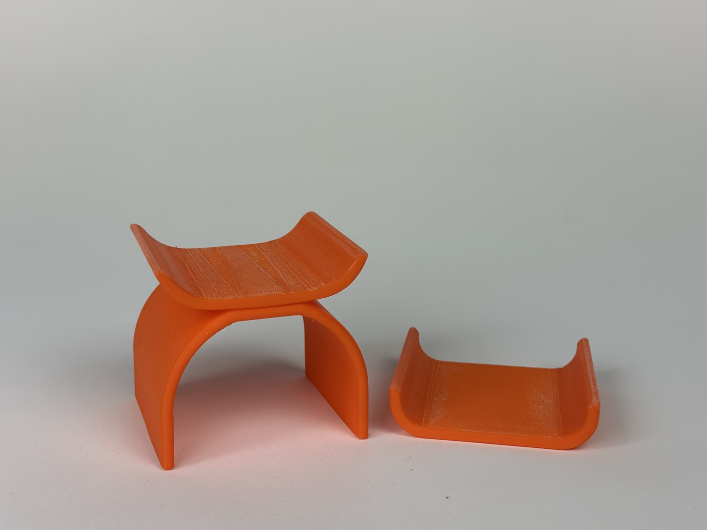
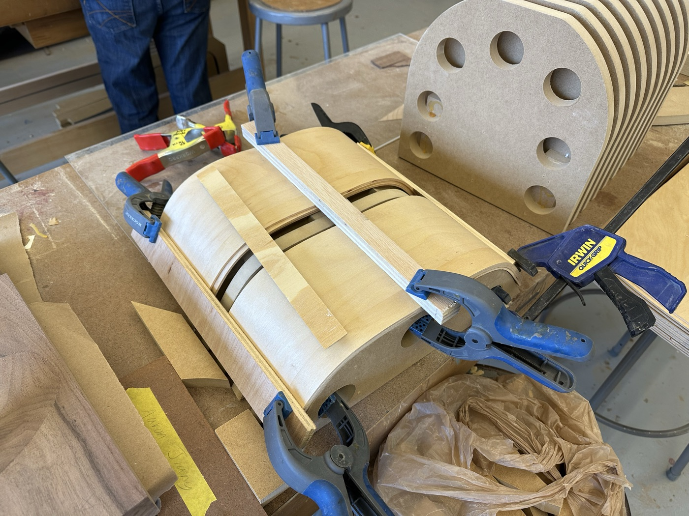
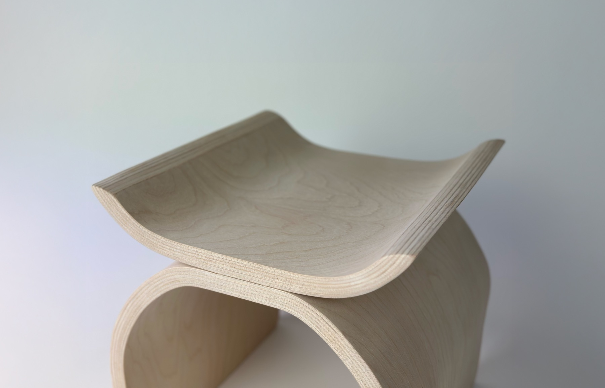
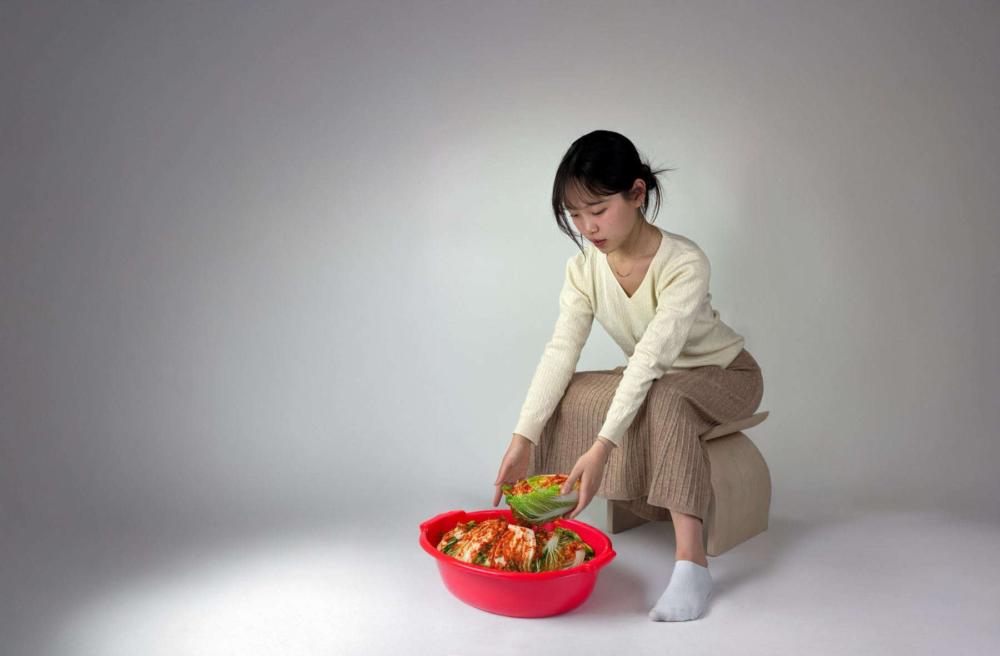

1. Form Exploration
Small models to explore shapes that support squatting posture
2 months
Jan '25 - Feb '25
Designer & Builder
Just me, plus studio feedback
Fusion
KeyShot
Workshop machines
Adobe Creative Cloud
The brief was to design and create a stool that has a purpose. My grandmother’s knees are weak from climbing many subway stairs, and she struggles to squat while making kimchi. Chi is a gift to kimchi makers, designed to improve safety and reflect the history of kimchi making.
How might I design a kimchi stool that celebrates culture and improves ergonomics?
2025 SIT Furniture Design Award, Stool & Other Chairs category.

Small models to explore shapes that support squatting posture

A scaled print to test the arch and seat curve

Laminating and clamping layers of wood into the final curves

A low, curved seat with a supportive arch base

A safer, more comfortable height for mixing kimchi
The piece took over 40 hours and required many new skills. I love UX/UI work, but physically usable industrial design projects like this are also rewarding.
Key Learnings: Wood Bending, Ergonomics, CAD & 3D Rendering